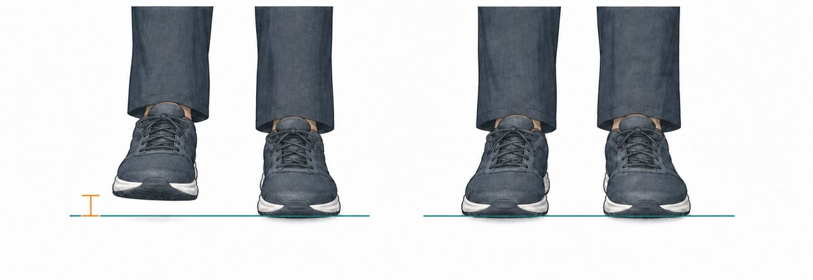

Manual operativo · rastreo y regulación
Procedimiento clínico de la Regulación Bioeléctrica para la valoración y regulación del nodo de lesión.
Manual operativo
Antes de empezar
Este manual documenta el procedimiento de la Regulación Bioeléctrica para el nodo de lesión. Cada técnica se presenta con su medición, la colocación de los imanes y su criterio de tiempo. Antes de la primera técnica deben conocerse la preparación del paciente y la medición de la simetría, base de toda la técnica.
Forma y tamaño. Cuadrados, rectangulares o circulares; el tamaño se elige según la zona a tratar y la complexión del paciente.
Intensidad en superficie. 0.1–0.5 T (100–500 mT; ≈ 1 000–5 000 gauss).
Recubrimiento. Deben estar cubiertos y provistos de una lengüeta que permita separarlos.
Identificación. Cada imán debe estar identificado de antemano, reconociendo la cara Norte (negativo) y la cara Sur (positivo) antes de aplicarlo.
Rejilla. Se emplean 4 imanes iguales con polaridades alternadas en tablero.
El Instituto Centrobioenergetica dispone de imanes reglamentarios.
Camilla sin superficie metálica —evita la interferencia con los imanes— y situada a la altura de la cintura del operador, para facilitar el rastreo. El mapa corporal y la escala de dolor 0–10 se emplean en la toma del caso (véase la ficha clínica).
El polo negativo (Norte) es el de rastreo e impactación sobre la zona de lesión; el positivo (Sur) es el complementario. En la aplicación general, la cara negativa contacta la piel; la única excepción es la técnica 1 (acidosis temporal), donde va la cara positiva.
Antes de aplicar imanes, descartar marcapasos, embarazo, prótesis y uso de quimioterapia. El cribado se registra en la ficha clínica.
Antes de empezar · Toma del caso (1/2)
Registro clínico en formato SOAP (subjetivo · objetivo · valoración · plan). Se completa antes de iniciar el procedimiento del nodo de lesión.
Ante cualquier casilla marcada, valorar la contraindicación antes de aplicar imanes.
Antes de empezar · Toma del caso (2/2)
| Zona / región | Hallazgo (tipo) | 0–10 |
|---|---|---|
Tipo de hallazgo: dolor · tensión · contractura · edema · ardor · otro. Regístrese en el lenguaje del paciente o en términos clínicos. Intensidad en escala 0–10 (EVA basal).
Antes de empezar · Preparación
La preparación reduce el tono de defensa muscular, una de las principales fuentes de variabilidad de la medición.
El tono de defensa muscular altera la longitud aparente de las extremidades; relajarlo estabiliza la medición basal.
Antes de empezar · Medición

Lámina. Acortamiento funcional (izq., señal naranja) frente a isometría (der.).
Si los talones quedan isométricos, no hay nodo basal activo: se pasa al rastreo por zonas. Si la derecha muestra acortamiento funcional, hay un nodo activo y se procede con la técnica 1 (acidosis temporal).
Acortamiento de una extremidad: signo de nodo activo. Isometría (talones a la misma altura): resolución.
Antes de empezar
El flujo de decisiones de una sesión, de la medición basal a la apertura del rastreo y al trabajo del nodo de lesión.
Apertura del rastreo · común a toda sesión
Indicación: acortamiento funcional en la medición basal. Es la única técnica que se inicia con el polo positivo; en las demás se coloca primero el negativo (rastreo).
Lámina 1. Colocación del polo positivo sobre el riñón del lado del acortamiento.
Si con el imán la extremidad sigue acortada, se trata de una discrepancia anatómica propia del paciente: se coloca una marca en esa longitud, que pasa a ser la referencia basal para las mediciones siguientes —el acortamiento lesional se seguirá manifestando sobre esa base anatómica.
Apertura del rastreo · común a toda sesión
Indicación: la extremidad vuelve a acortarse tras la corrección de la técnica 1. Señala una desregulación más sostenida, que se aborda con un dipolo a distancia entre la zona renal y el área parietal contralateral.
Lámina 2. Zona renal del lado del acortamiento (polo positivo) y área parietal contralateral de la cabeza (polo negativo): el dipolo cruza el cuerpo.
Nodo de lesión · Técnica 1
Indicación: registrado el mapa corporal, se trabaja cada zona sintomática, empezando por la de mayor intensidad. Cada zona se resuelve como un dipolo: local, o a distancia con un nodo regulador.
Lámina 3. Colocación del negativo sobre la zona más sintomática y cierre del dipolo local con el positivo adyacente.
Solo se coloca un dipolo donde el rastreo responde con acortamiento; una zona que no acorta no se trabaja.
Si con el positivo adyacente no se consigue la isometría en ninguna posición, la zona necesita un punto distante → continúa en la técnica 2 (punto distante).
Nodo de lesión · Técnica 2
Cuando el dipolo local no restablece la isometría, la zona confirmada necesita un nodo regulador a distancia: el negativo permanece sobre la zona y el positivo busca ese nodo en un orden fijo.
Lámina 4. Dipolo a distancia: el negativo sobre la zona y el positivo sobre el nodo regulador que restablece la isometría.
| 1 · Zona renal | Región lumbar posterior, bajo las últimas costillas, a cada lado de la columna. Primero la derecha, luego la izquierda. |
|---|---|
| 2 · Suprarrenal | Justo por encima de la zona renal, sobre su polo superior. Primero la derecha, luego la izquierda. |
| 3 · Hígado | Hipocondrio derecho; sobre la piel, rastreando toda la zona hepática. |
| 4 · Bulbo raquídeo | Nuca, en el hueco por debajo del occipucio. |
| 5 · Cuerpo entero | Si ninguno restablece la isometría, rastrear el resto del cuerpo. |
Al cerrar la sesión, la mayoría de las zonas quedan resueltas como un dipolo local; solo alguna se resuelve a distancia, habitualmente en la zona renal.
Nodo de lesión · Técnica 3
Indicación: dolor con contractura. Es un refuerzo local sobre un punto ya confirmado (dipolo local o a distancia): en lugar de un solo dipolo, se monta una rejilla de cuatro imanes con polaridades alternadas para intensificar el gradiente.
Lámina 5. Rejilla 2×2 en tablero (N–S / S–N), con imanes cuadrados o circulares; en cada frontera entre imanes se crea un gradiente.
Si el punto forma además un dipolo con la zona renal a distancia, puede montarse la rejilla sobre el negativo manteniendo ese dipolo distante: se combinan el gradiente local (rejilla) y la recalibración a distancia (nodo renal) en una sola configuración.
Cerrar la sesión
Concluido el tratamiento por zonas, la sesión se cierra registrando los hallazgos, acompañando la reincorporación del paciente y consolidando el nuevo estado mediante las preguntas de integración.
¿Qué diferencias percibes? · ¿Cómo te encuentras? · ¿Qué ha cambiado?
Se ajusta a la evolución clínica del paciente; no hay un intervalo fijo. Se espacian las sesiones a medida que el rastreo deja de marcar. Este procedimiento no sustituye el diagnóstico ni el tratamiento médico.
Cerrar la sesión
Registro de la sesión y seguimiento entre sesiones: qué se halló, qué se trató y cómo evoluciona cada zona en la reevaluación.
Marcar sobre la silueta: ● zona tratada · ○ zona pendiente · ⊘ reaparece en la reevaluación. Sirve de referencia para la siguiente sesión.
| Zona / región | Hallazgo (tipo) | 0–10 | Tratada | Reevaluación |
|---|---|---|---|---|
Tipo: dolor · tensión · contractura · edema · ardor · otro. En «Reevaluación» anotar si la zona vuelve a marcar acortamiento (y su 0–10) o queda resuelta.
Glosario
Referencias
Selección de la evidencia fisiológica y biofísica que fundamenta el modelo. Referencias verificadas (indexadas en PubMed).
Manual operativo de la técnica · Regulación Bioeléctrica
Dr. Miguel Ojeda Rios · Programa El Cuerpo Eléctrico · Edición 2026
Alcance. Documenta un procedimiento de la Regulación Bioeléctrica. No sustituye el diagnóstico ni el tratamiento médico.